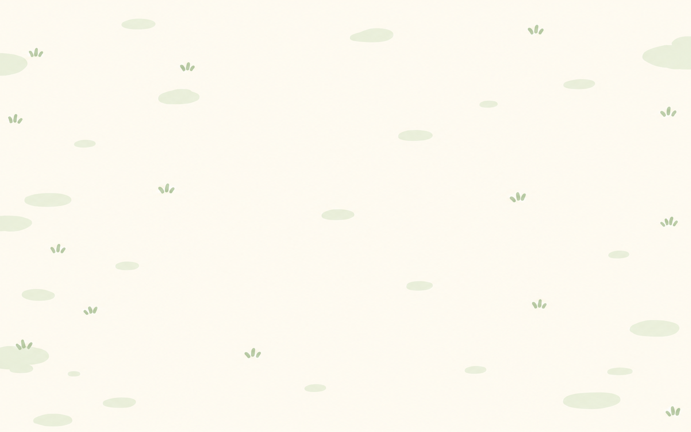
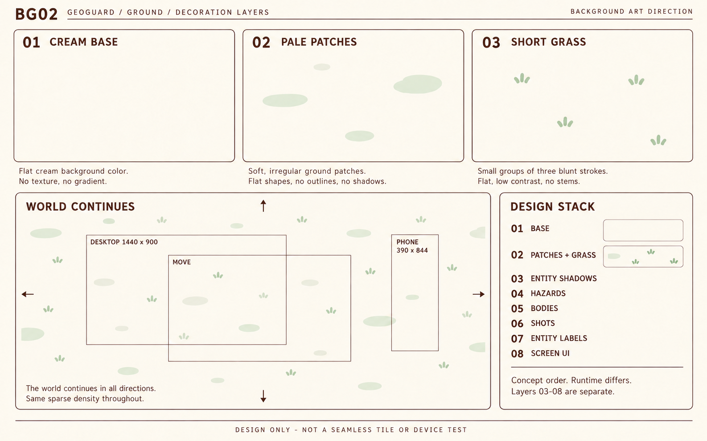

GeoGuard · 背景 r01
两张独立背景原画，待主审。继承已批 master r02；BG01是无实体/UI/影子/危区/掉落的干净地面，BG02是拆层与世界延展设计。1586×992位图不等于无缝纹理、透明源层或设备测试。

BG01 · 干净完整战场背景。稀疏低对比世界地面，四向延展须后续按规则实现。
BG02 · 基底 / 浅斑 / 短草 / 移动视窗 / 目标层级。框线与箭头仅规格标注；1440×900、390×844是设计目标，示意框不可量测作实机布局。仅上述两张为最终送审图片。iterations/bg02-first.png保留首次生成历史，浅斑样本混草问题已在最终BG02修正。正式批准权归主审，本包无接入、提交或部署。